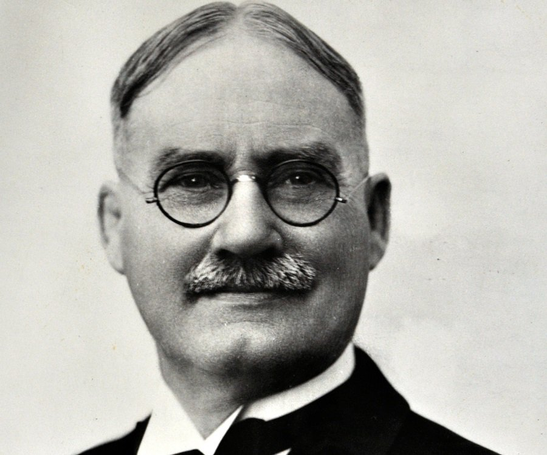

The full size NBA court is 94 feet by 50 feet. It consists of the free throw line, the restricted area (not shown) mid-court line, the three-point line, and the lines for the lane. It also has a basket and a backboard. The distace from the free throw line to the basket is 15 ft.
 James Naismith (left) was the inventor of basketball. He got this idea one winter. He was a gym coach and it was the winter. He wanted something to do for his kids. The next day, he brought in 2 peach baskets and a ball. All the kids wanted to play and it turned out to be a success. The first game ended in 1 - 0 because all the kids were pretty bad.
Dribbling
In basketball, you have to dribble the ball to move. If you don't dribble it is called a travel. If the referee calls a travel on you, the ball will be given to the other team. If you catch your on airball, it will also be considered a travel (this rule exsists so players cannot abuse the rule). Referees will be strict. If you even take one extra step, they will call it a travel. Sometimes, people get away with taking 4 or 5 steps because the refs didn't notice. (see below. I think the funniest one is when Kemba Walker takes like 5 steps on the imbound pass (number 15 blue jersey and plays on the Hornets))
All time great players
There are a lot of great players in the NBA. Only the best of the best make the Naismith Hall of Fame. Some of the all-time greats include Lebron James, Bill Russel, Micheal Jordan, Kareem Abdul-Jabbar, "Magic" Johnson, Larry Bird, Dennis Rodman, Kevin Mchale, Wilt Chamberlain, and James Harden. These are just some of the all-time great players. Wilt Chamberlain (below) has the record for most points scored in a game with 100. Not even the great Micheal Jordan or the amazing Kobe Bryant have gotten close. Kobe has the second most points in a game with 81. The future GOAT is so clearly Trae Young no contest. His superstar X-Factor handles with his deep range deadeye stepback along with his unlimited vision break starter is too much for everyone else to handle.